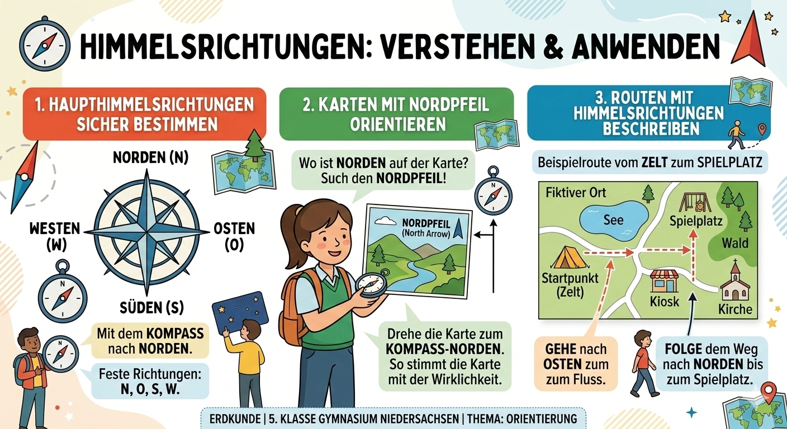

Das kannst du danach
- Die acht Himmelsrichtungen benennen und anwenden.
- Karten mit Nordpfeil richtig ausrichten.
- Lagebeziehungen mit Norden, Osten, Süden und Westen beschreiben.
- Zwischen Sonne, Kompass, Karte und GPS passend auswählen.
Erdkunde Klasse 5
In diesem Modul lernst du, dich mit den Himmelsrichtungen sicher zu orientieren: mit Kompassrose, Karte, Nordpfeil und einfachen Wegbeschreibungen.
Norden zeigt auf der Karte meist nach oben. Dann liegt Osten rechts, Süden unten und Westen links.
Das Modul orientiert sich am Kerncurriculum Erdkunde für Niedersachsen. Im Kernthema Orientierung im Raum werden genau diese Kompetenzen gefordert: natürliche Orientierung, Orientierung mit Karten, Kompass und GPS sowie das Beschreiben von Lage und Lagebeziehungen.
Quellen: Kerncurriculum Erdkunde Niedersachsen (PDF) | Planet Schule - Orientierung mit Kompass | GFZ - Erdmagnetfeld und Kompass
Die Grafik zeigt dir die wichtigsten Inhalte als Gesamtüberblick. Danach vertiefst du die Bereiche in interaktiven Übungen.

Nutze diese feste Reihenfolge, wenn du eine Richtung bestimmen sollst. So vermeidest du typische Verwechslungen.
Tipp: Wenn ein Ort sowohl weiter rechts als auch weiter oben liegt, dann ist die Richtung meistens Nordosten.
Diese Beispiele zeigen, wie du Himmelsrichtungen in echten Situationen verwendest.
Du gehst von der Schule zuerst nach Osten zur Kreuzung und dann nach Süden zum Sportplatz. Diese Wegbeschreibung ist klar, weil beide Richtungen genannt werden.
Wenn Norden auf einer Karte rechts liegt, musst du alle Richtungen mitdrehen. Dann liegt Westen oben und Osten unten.
Für eine schnelle Schätzung reicht Sonne und Schatten. Für genaue Richtungen ist der Kompass passender. Für Wegplanung nutzt du eine Karte oder GPS.
Klicke auf die geforderte Richtung. Danach bekommst du sofort eine Rückmeldung.
Aufgabe wird geladen...
Wähle, wo auf deiner Karte Norden liegt. Die anderen Richtungen werden automatisch ergänzt. So siehst du sofort, wie sich die Orientierung dreht.
Klicke auf ein Mittel und lies, wann es besonders hilfreich ist.
Bei jedem Klick entsteht eine neue Aufgabe.
Aufgabe wird geladen...
Lies die Ortskarte und bestimme die Richtung zwischen zwei Orten. Die Karte bleibt gleich, die Fragen wechseln.
Aufgabe wird geladen...
Wähle das Mittel, das zur Situation am besten passt.
Aufgabe wird geladen...
Der Test mischt Richtungen, Kartenorientierung und Alltagssituationen. Nach jeder Antwort erhältst du eine kurze Begründung.
Punkte: 0 / 10
Ortskarte für Lagefragen (Norden ist oben)
Test noch nicht gestartet.